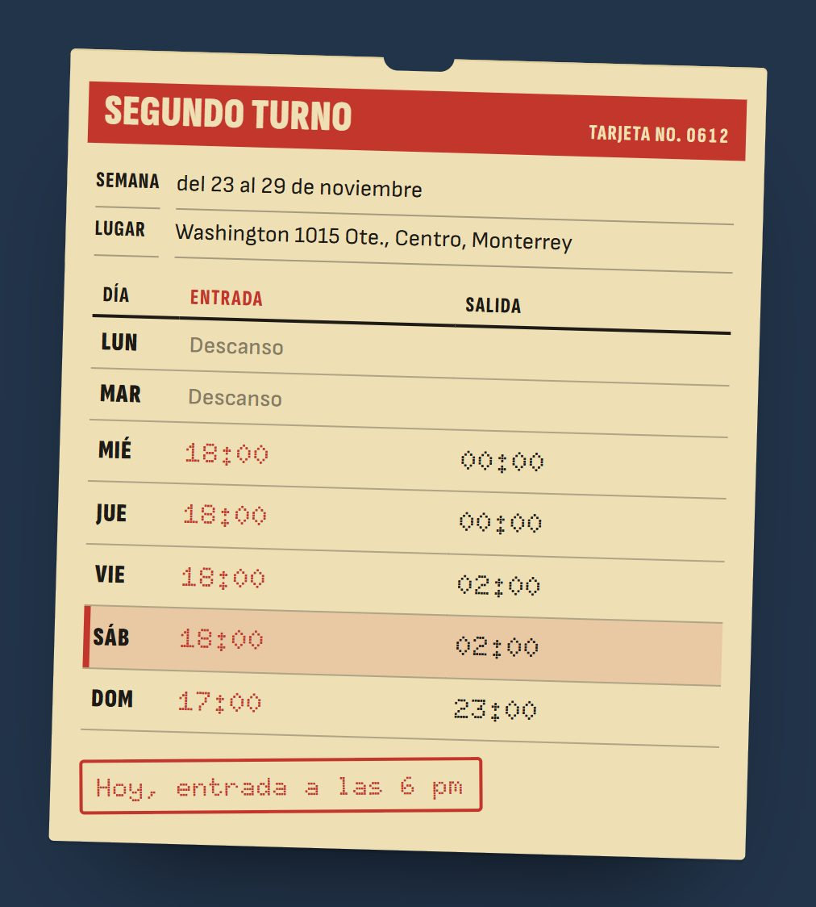
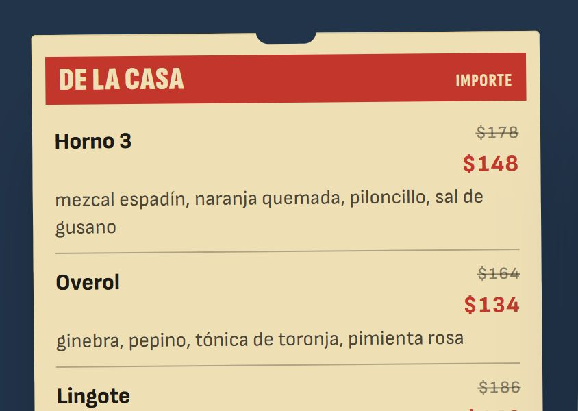
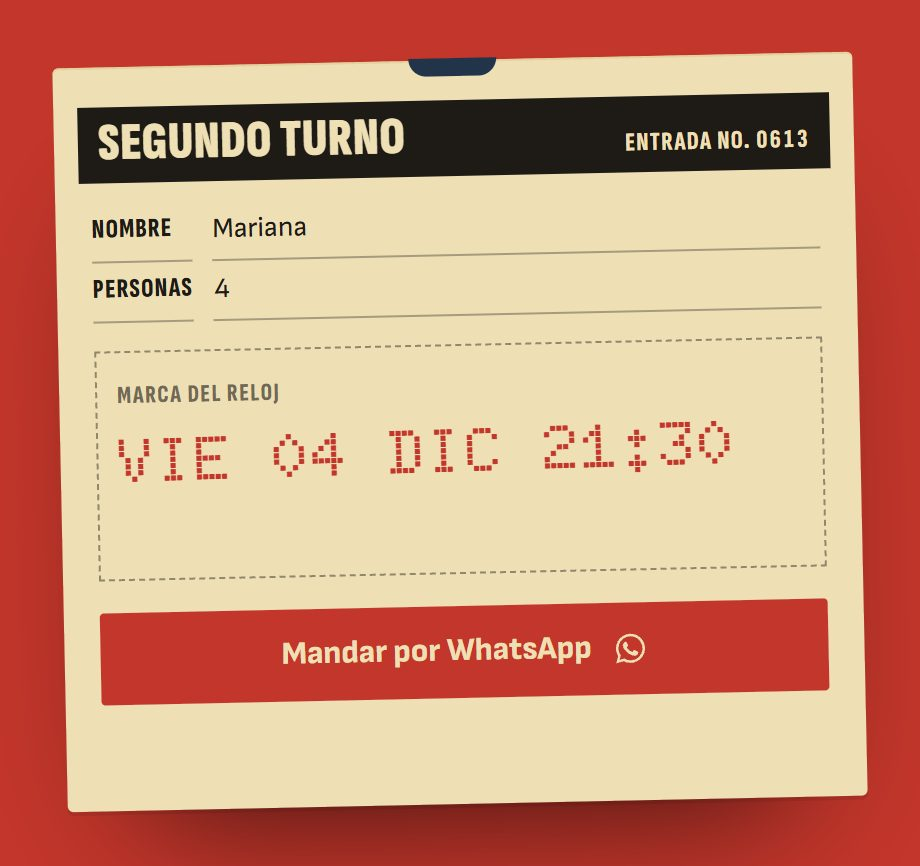

Cómo pienso una página
Segundo Turno es un bar inventado. Lo hice para enseñarte cómo trabajo sin publicar el material de ningún cliente: cada decisión sale de cómo vende el lugar y de lo que necesita quien llega.

La portada es su tarjeta de checador
El bar está en una nave donde se hacían troqueles y su gente llega al salir del turno. La tarjeta es lo que te dan en la puerta.
El horario de toda la semana, y si hoy ya abrieron, sin tener que buscarlo.

El precio cambia con el turno
De 6 a 9 es el primer turno y los cócteles de la casa cuestan $30 menos. La página sabe qué hora es en Monterrey y abre en el turno que toca.
El cliente ve cuánto va a pagar según la hora a la que llega.

Reservar es checar entrada
Eliges la noche, la hora y cuántos van, y el reloj lo marca en tu tarjeta.
Al bar le llega por WhatsApp todo lo que necesita para apartar la mesa.
Colores y letra
El azul del overol, la cartulina manila y la tinta roja del reloj. La letra angosta es la de lo preimpreso en la tarjeta; la de puntos, la que imprime el reloj.
Que la página no se pueda confundir con la de otro bar.
Sin fotos
Por qué no tiene fotos
Un bar inventado no tiene fotos propias, y las de banco se notan. Preferí que todo saliera de su tarjeta.
Con tu empresa van tus fotos, tu logo y tu menú, como los publicas tú.
Y así le llega una reservación
Quien aparta mesa para el viernes a las 9:30 abre WhatsApp con este mensaje ya escrito. El bar solo contesta con la mesa.
Hola, quiero checar entrada en Segundo Turno: Viernes 4 de diciembre, 9:30 pm 4 personas A nombre de: Mariana ¿Tienen mesa?
El mensaje cambia con la noche, la hora y cuántos van.
Lo demás que hago
A veces lo que urge no es la página. Esto también lo hago, y todo se puede probar.
-
Tu ficha de Google Maps
Que sea de tu empresa y diga tu teléfono y tu horario de hoy. En noviembre de 2026 revisé 254 fichas de cafés, panaderías, pastelerías, florerías y salones: 43 no tenían dueño y 46 no mostraban teléfono.
Cómo se arregla una ficha -
Pedidos, cotizaciones y citas
Lo que tu cliente arma en tu página te llega escrito: por WhatsApp, como cotización o como cita en tu agenda.
Cómo llegan los pedidos -
Sistemas para tu oficina
Para lo que hoy vive en hojas de cálculo y mensajes. Hay cinco demos que puedes usar: cotizador, tablero de dirección, requisiciones, agenda y seguimiento de taller.
Ver los sistemas -
Sitios de ejemplo
Cinco sitios de empresas ficticias que funcionan completos: un bar, un café, una panadería, una marca de sodas y un distribuidor de equipo de seguridad. Las muestras de empresas reales no se publican sin su permiso.
Abrir los sitios


Cómo trabajo
- Me mandas la liga o el nombre
De tu ficha de Google, tu Facebook, tu Instagram o tu página.
- Junto lo que ya publicaste
Logo, fotos, menú o catálogo, precios y horario. Si algo no lo encuentro, te lo pregunto.
- Te mando la muestra en video
En unos días, con tu material. Si quieres probarla tú, te paso la liga privada para tu celular.
- Si te gusta, te paso la cotización
Por escrito y separada por partes, para que elijas por dónde empezar.
- La publicamos a nombre de tu empresa
Dominio, alojamiento y ficha de Google en cuentas tuyas. Después, los cambios de precios, fotos y horarios me los pides por correo.
Lo que siempre cumplo
- Si yo te escribo primero, son máximo tres mensajes. Si me dices que no, ya no te vuelvo a escribir.
- La muestra es privada. No la publico ni la enseño sin tu permiso.
- Uso tus fotos y tus datos. No pongo fotos de banco haciéndolas pasar por tuyas, ni reseñas inventadas.
- Las claves y el dominio son de tu empresa. Si un día quieres que otra persona la mantenga, se la pasas sin pedirme permiso.
Pide tu muestra
Dudas
¿Cuánto cuesta?
Depende de lo que necesites: no cuesta lo mismo arreglar una ficha que hacer una página con catálogo o un sistema. Después de la muestra te mando la cotización por escrito, separada por partes.
¿Y si no me gusta la muestra?
No pasa nada y no me debes nada. Me dices qué cambiarías, o lo dejamos ahí.
¿Qué necesito tener?
Lo que ya publicas basta: tu logo, fotos de tu producto o tu local y tus precios. Si tu menú está en una foto o en un PDF, también sirve.
¿Puedo empezar solo con la ficha de Google Maps?
Sí. Muchas empresas empiezan por ahí y después deciden si quieren página, pedidos en línea o un sistema.
¿Quién hace los cambios después?
Yo, por correo: me mandas el precio nuevo, la foto o el horario y lo actualizo. Si prefieres hacerlo tú, se puede dejar una parte editable.
¿Tengo que ir a algún lado o que vengan a mi local?
No. Todo se hace a distancia: por correo, y por videollamada si hace falta enseñarte algo.